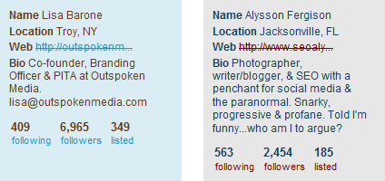
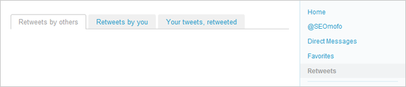
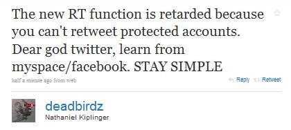

If there’s one thing I hate, it’s stupid people. Actually, that’s not entirely accurate; I should say…I hate stupid ideas, wherever they may reside. If you’re currently generating or harboring stupid ideas, then I hate your stupid head. Yesterday was an especially annoying day for me, since approximately 98% of the World’s population discovered Twitter’s new RT feature and went into an emotional frenzy of stupid ideas. It was like Taz from Looney Tunes, minus the Tasmanian devil, plus ignorance and invalid logic. Right now, I’d like to take a moment to address all the anti-new-RT arguments I heard yesterday and explain why they’re stupid and you’re stupid for saying them.
Why Twitter’s New Retweet Feature DOESN’T Suck
I’ll start with the post by Lisa Barone, Why Twitter’s New Retweet Feature Sucks, since it was clearly the firecracker that woke the monkeys and encouraged them to riot. If there’s time, I’ll touch on a few other sources as well, but overall, I think Lisa’s post represents most of the common complaints I’ve heard.
Throughout this post, I’m speaking to YOU, as in “anyone who agrees with what Lisa’s post says.” I want to make it very clear that this is not a personal response directed at Lisa–despite the fact that I quote her writing throughout my post. So please, before all you emo LB fanboys and fangirls come galloping in to save the day, just understand that (1) I’m not talking to her, and (2) I’d crush you anyway. In other words, don’t comment with something like “Lisa’s right! You’re wrong!” because for the purposes of this post (calling you stupid repeatedly), there is no Lisa. There’s only valid logic and invalid logic. Oh, and there’s me…I definitely welcome personal attacks on myself, should you feel the need to be immature like that.
The text quoted in red represents the arguments I was sent here to destroy.
It puts strangers in my stream
I can certainly understand why this would startle people, but the vast majority of complaints are nothing more than premature emotional reactions…
…like the time when Chrome was first released and everyone freaked out because they thought its EULA stated that Google was claiming ownership of any content published through Chrome…
…or that time when the U.S. government outlawed Heroin.
Once you think about it for yourself, you realize how silly “the mob” mentality is. Since when do we use Twitter to avoid meeting new people?
The two tweeps used as examples in the post are Lisa and Alysson, who follow 409 and 563 people, respectively. Do they really know this many people?

I’m sure they knew them all at some point, but chances are…there’s at least a handful of people who never tweet, and if they ever did…they’d be just as “stranger-like” as the people being new-retweeted. The only difference here is the new RT system makes you feel powerless over your own Twitter stream. I emphasize feel because you’re not actually powerless–it only feels that way. To explain what I mean, let’s look at the analogy from Lisa’s post:
Groggy, with a headache, you wake up the next morning feeling content and still [giggling] in your head about all the fun you had last night. Until you turn over. AND THERE’S A STRANGER IN YOUR BED! Someone you’ve NEVER SEEN before.
While this analogy adequately represents the emotional reaction shared by many yesterday, it doesn’t accurately represent the functionality of the new RT system (i.e. reality). It fails to incorporate the following details:
- The stranger that appears in your Twitter stream was retweeted by someone you follow.
- Beneath the stranger’s avatar is the name of the person you follow who retweeted the stranger.
- For each person you follow, you have the option to block their retweets from appearing in your stream.
Once you incorporate those details, the analogy goes something like this:
Groggy, with a headache, you wake up the next morning feeling content and still giggling in your head about all the fun you had last night. Then suddenly, a person you’ve never seen before walks into the room. You scream in terror and wet the bed. The stranger then says:
“Don’t be alarmed…I’m a friend of Matt Cutts. He gave me a key to your room and insisted that I introduce myself.”
Furious and soaked in urine, you grab the stranger and throw them out the window. Then you change the lock so that Matt Cutts can’t send any more strangers into your room.
You see? You have the power to throw people out of your space, and you have the power to make sure they never come back. The idea that your Twitter stream is a “sacred space” is absolutely ridiculous. If you came to Twitter in hopes of finding privacy and seclusion, you’re a goddamn moron.
How ’bout this gem:
According to one poll, only 6 percent of respondents like the change as is.
You mean…this poll of 292 people? If truth-stretching and data-skewing are permitted, then here are my counterarguments:
• According to one poll, the majority of users love it or think it has potential.
• According to one poll, only a minority of users prefer the old RT system.
• According to one poll, 0 percent of users said they hate the new RT system.
• The new ’09 Twitter Retweet has more available horsepower than any other system in its class!
• Critics are calling the new retweet system “The best new retweet system of 2009!”
Here’s another argument I don’t understand:
Showing the unfamiliar avatar does not give me “more context” for the tweet. It gives me less because I don’t know this individual. If I were to see Rae’s avatar, I’d know to trust the content. I’d know it already passed the snuff test.
This is just nonsense and not because Rae has poor taste. If you don’t understand why it’s nonsense, then maybe the illustration below will clear things up. For simplicity, I’ll refer to the person I’m following as my friend, and the person I don’t know (i.e. the original source being retweeted) as a stranger. This is the same RT, as it would appear in my Twitter stream with the old retweet system vs. the new retweet system.
DIDN’T CHANGE:
1. name of my friend
2. name of a stranger
3. original tweet by stranger
4. time of retweet
LOSSES:
5. device my friend used to RT
6. picture of my friend
GAINS:
7. picture of a stranger
8. official RT icon
9. # of friends/strangers who retweeted this
10. device the stranger used for original tweet
11. time of original tweet
The only information you’ve lost is your friend’s avatar (which you’ve probably already seen a million times) and the device your friend used to retweet the stranger. Um…BFD?
On the other hand, look at what information we’ve gained from the new RT. We can see the source of the information being presented to us. Isn’t that more important than the warm, fuzzy feeling you get from seeing your friend’s avatar for the 600th time today? Keep in mind…your friend’s name still appears in the RT, so you still know that the original tweet passed the snuff test. In addition to that, you can now see the original source…which gives you a shit-ton of context. Ever heard of judging a book by its cover? Why would you want the results of your friend’s snuff test, when you could be snuffing this stranger yourself? Personally, I don’t trust the tweeps I follow to thoroughly stereotype the tweeps they follow.
What about differences of opinion between me and a friend? Do your friends all think exactly the same way you do? If I accidentally make friends with a Jehovah’s Witness…can I count on them to never send their friends to my doorstep?
Also worth mentioning: with the new RT system, you can see when the original tweet was made, and you can see the total number of people (not just your friends) who have retweeted something.
Moving right along now…
The new retweet feature doesn’t allow me to add my own comments. I’m stuck simply parroting back what was already said.
That’s irrelevant; that functionality is still available via the old RT system. I can complain that the new RT system doesn’t fetch me beers, but that’s also irrelevant. If you insist on adding “that’s cool” to your friend’s tweets before you send them out, then by all means…continue doing it. Nothing has been lost–lots of things have been gained. “Oh yeah…like what?” Like this:

The new features also assumes that RT’ing something always means that you agree with it. That it’s a Google-esque “vote” for that content. That’s not the case. Sometimes I’m retweeting things because I think the content is moronic and I want to add my own commentary and point it out. I don’t get that right anymore.
That’s incorrect. As I’ve said already…you still get that “right.” I could leave it at that and move on to the next counterargument…however, I’d like to kick this dead horse a little bit more.
STOP PROMOTING SHIT. If you think something is moronic…do me a favor and keep it to yourself. The only thing worse than reading moronic shit is reading moronic shit with someone else’s commentary. Imagine your friend came down with the flu, and the first thing they did was run over to you and pass it along. Now you both have the flu…and your friend starts complaining to you about their symptoms. Sound like fun? No, of course not. Remember: share good content, keep the moronic shit to yourself.
NO ONE CARES WHAT YOU THINK. I’m just gonna say it: if the thought of retweeting something without fucking with it first really bothers you…there is a very high likelihood that you’re entire existence is pointless. The reason is simple: great minds create content that pushes the limits and expands the boundaries of human knowledge. Minds that are incapable of creating something new…just annotate the content of others.
As it turns out, the new RT system works well for both types of people. How? Because Twitter, Google, Bing, and all the apps and mashups that use Twitter data now have an automated method for separating the great from the pointless. If your followers are old-school retweeting you…they are effectively choosing to use your content in a way that doesn’t give you credit for it–not the old-school credit that is absolutely MEANINGLESS, but the new credit that is trackable and unmistakable. If your content isn’t being new-retweeted, only a handful of people will ever know it was yours. Think about it.
It takes away my visibility in my own network
[scratching my head]
Um…what? You don’t seriously mean to tell me that you only RT people to gain visibility in your followers’ streams, do you?

It says “Retweeted by Rhea and 1 other.” Where is the confusion coming from? It says “Retweeted by Rhea…” but you’re not 100% confident that this was retweeted by Rhea?
It does me no good to find good content and retweet it if I’m not getting credit for it. Sorry. Let’s not pretend that a good deal of retweeting is not motivated by ego. THIS IS THE INTERNET! That’s why people share content to begin with. To show everyone else how smart and savvy and clever we are. Twitter just took away my finder’s fee.
That’s possibly the most disturbing thing I’ve ever heard. Reading that makes me physically ill. YOU want credit for something SOMEONE ELSE created, and you’re upset because the new RT gives attribution to the actual creator? You honestly expect the developers at Twitter to create a system that gives stupid people credit for smart people’s content?
Are you fuckin’ kidding me?
It excludes people who want to play
How do you create a feature that a large segment of your users can’t even use?

So…you’re upset because you think you should be able to retweet private tweets that your friends don’t want published? Am I the only one who realizes how stupid that is?
Andrew Mueller thinks this was done to bring value to Bing and Google. I agree with him. He doesn’t like the ‘we know best’ tone Ev takes in his post to explain the decision. I agree with him. They took [away] the flexibility of retweeting without giving users anything of value to make up for it. Obviously this wasn’t done for us. It was done for whatever master plans Twitter has.
Last time I checked…I wasn’t in the business of organizing the World’s information. I’m not going to hate on Google and Bing just because they’re making money. Again, the new RT hasn’t taken away anything–it has only added new functionality to Twitter. Regarding these “master plans” you speak of…I don’t think it’s a secret that businesses try to grow, succeed, and make money. Twitter has been consistently improving their service, and they can proudly say they’ve created something. You know…as opposed to trying to get credit for other people’s creations.
Okay, it’s 4:00 am and I’ve been writing/venting for like 8 hours straight, so I’ll stop here. I’m gonna publish this beast as-is, and when I wake up tomorrow morning…I better not find any of you old-retweeting it. I don’t care what your device does or doesn’t support. Get your content-parasitic bitchass on the Web and click the new RT button. Or I’ll kill your dog.
P.S. I haven’t established a comment policy yet, but it goes something like this: write whatever you want; comments that contain links are held for moderating; author links become active for relevant sites and people I like; spammy, self-promoting comments are edited to make the author sound like a dumbass.